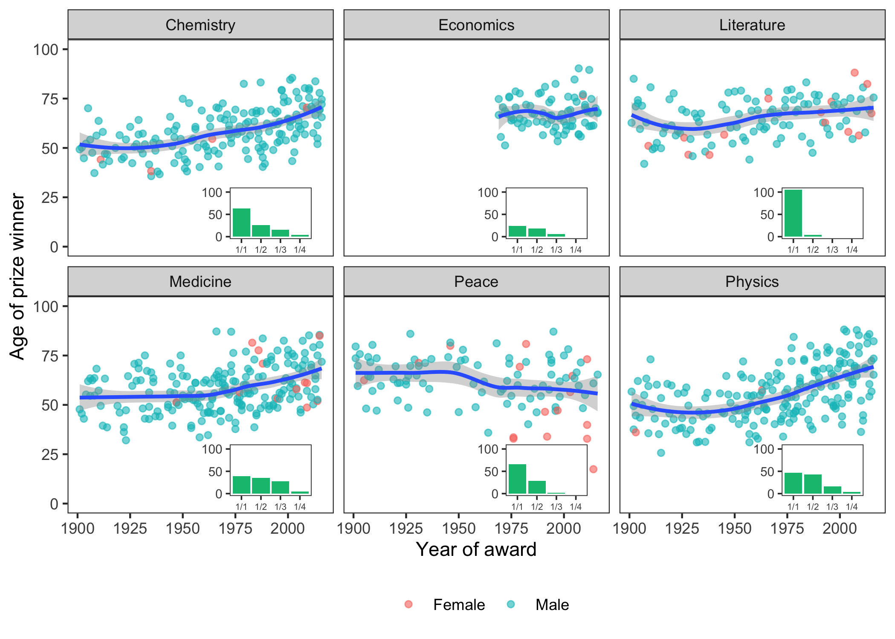

I recently spent some time working out how to include mini inset plots within ggplot facets, and I thought I would share my code in case anyone else wants to achieve a similar thing.
The resulting plot looks something like this:
First let’s load some packages that are required for this example (and for an easy life, in general):
## some essentials from the tidyverse
library(ggplot2) ## for plotting
library(dplyr) ## for data manipulation
library(lubridate) ## for handling dates
For this example, I’ll be playing with some Nobel Prize data. This dataset was featured in the weekly #TidyTuesday R community event, which is led by @thomas_mock and @R4DSCommunity, and catalogued by @nsgrantham
Start by reading in the data and adding the age of each laureate at the time of the award, based on their birth date and the prize year.
nobel <- read.csv("https://raw.githubusercontent.com/rfordatascience/tidytuesday/master/data/2019/2019-05-14/nobel_winners.csv")
plot_data <-
nobel %>%
mutate(prize_date = paste0(prize_year, "-12-10"),
age = time_length(interval(ymd(birth_date), ymd(prize_date)), "year")) %>%
group_by(prize_year, laureate_id) %>%
slice(1) %>% ## make sure we have just one row per prizewinner per year
ungroup()
The main plot will show how the age of winners has changed over time for the six categories. Also presented - without comment - is the gender of each laureate.
main_plot <-
ggplot(plot_data, aes(group=category)) +
geom_point(aes(x=prize_year, y=age, colour=gender), alpha=0.6) +
facet_wrap(~category) + ## plot each prize category separately
theme_bw() +
labs(y="Age of prize winner", x="Year of award") +
geom_smooth(aes(x=prize_year, y=age), method = "loess") + ## add a smoothed line
scale_y_continuous(limits=c(0,100)) +
scale_colour_discrete(breaks=c("Female","Male")) +
theme(panel.grid.major = element_blank(),
panel.grid.minor = element_blank(),
legend.position = "bottom",
legend.title = element_blank())
main_plot
It looks like Nobel prize winners are getting older for all categories other than Peace, which may be reassuring for those of us who are yet to receive one…
As an example of the inset, let’s use a bar plot counting the number of people sharing the prize each year.
## A function to plot the inset
get_inset <- function(df){
p <- ggplot(data=df %>%
group_by(category, prize_year) %>%
slice(1),
aes(x=prize_share, fill=category)) +
geom_bar() +
scale_x_discrete( drop=FALSE) +
scale_fill_manual(values = c("#00BF7D", "#A3A500", "#F8766D","#00B0F6","#E76BF3","#636363")) +
guides(fill=FALSE) +
theme_bw(base_size=9) + ## makes everything smaller
theme(panel.background = element_rect(fill="white"), ## white plot background
axis.title.y = element_blank(),
axis.title.x = element_blank(),
axis.text.x = element_text(size=rel(0.7)), ## tiny axis text
panel.grid.major = element_blank(),
panel.grid.minor = element_blank(),
plot.background = element_blank())
return(p)
}
inset_plot <- get_inset(plot_data)
Adding this plot as an inset is easy using
annotation_custom.
However, by definition, the annotation will be the same on every panel:
## Add it as an inset
main_plot +
annotation_custom(grob=ggplotGrob(inset_plot),
ymin = -8, ymax=34, xmin=1955, xmax=2015)
ymin, ymax, xmin and xmax define where the inset (the grob) will
be placed. This of course needs tweaking to find the right spot to avoid
covering any important parts of the data (like Malala)
When using facets, having the same plot on each facet is not very informative.
To add different plots to each facet, I used a workaround modified from this StackOverflow answer:
## This function allows us to specify which facet to annotate
annotation_custom2 <- function (grob, xmin = -Inf, xmax = Inf, ymin = -Inf, ymax = Inf, data)
{
layer(data = data, stat = StatIdentity, position = PositionIdentity,
geom = ggplot2:::GeomCustomAnn,
inherit.aes = TRUE, params = list(grob = grob,
xmin = xmin, xmax = xmax,
ymin = ymin, ymax = ymax))
}
Use the data argument to place the inset on the relevant facet, either
by subsetting the actual data used to plot the inset, or just make a
dataframe containing the aestetic (aes) used to divide into facets
(here, it’s category).
main_plot +
annotation_custom2(grob=ggplotGrob(inset_plot),
data = data.frame(category="Chemistry"),
ymin = -8, ymax=34, xmin=1955, xmax=2015)
To do this for all the facets, I’ll use split() to divide the
dataframe into categories, and map() from the purrr
package to apply our
annotation_custom2() function to each subset and return the results as
a list. See the StackOverflow for a solution using plyr instead, if
you prefer. This can then be added to the plot:
library(purrr)
insets <- plot_data %>%
split(f = .$category) %>%
purrr::map(~annotation_custom2(
grob = ggplotGrob(get_inset(.) +
scale_y_continuous(limits=c(0,105), breaks = c(0, 50, 100))),
data = data.frame(category=unique(.$category)),
ymin = -8, ymax=34, xmin=1955, xmax=2015)
)
main_plot + insets
We can now draw the groundbreaking conclusion that when it comes to Nobel glory, Literature is a more solitary field than Medicine.
And now just for fun, while we’re here:
multiple_winners <-
plot_data %>%
group_by(laureate_id) %>%
filter(length(laureate_id) > 1)
main_plot +
insets +
geom_point(data = multiple_winners,
aes(x=prize_year, y=age), shape = 1, alpha=0.7) +
ggrepel::geom_text_repel(data = multiple_winners,
aes(label=gsub(",.*$","",full_name),
x=prize_year, y=age, group=full_name),
size=2, force=10, nudge_y = 45, segment.size=0.15)
This blog post was originally posted on the OPIG blog.